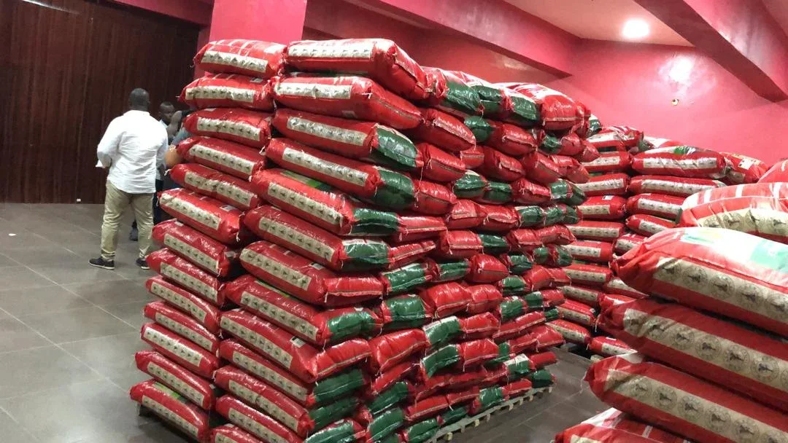
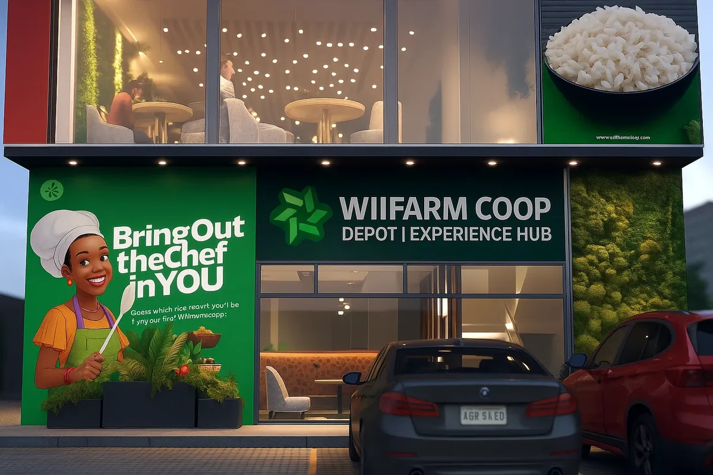
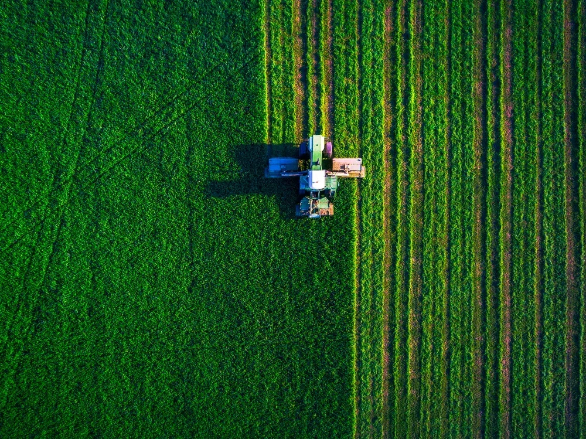
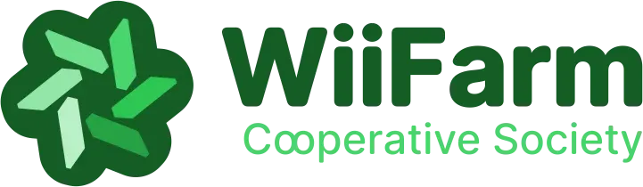

Grown from the land. Shared with the people.
WiiFarm Rewards & Lotto is built in partnership with WiiFarm Cooperative Society, a registered, member-owned agricultural cooperative that has been growing, processing and distributing food since 2022. Together we are building a way to reward the public for being part of it.
A cooperative that builds, not just talks.
WiiFarm Cooperative Society brings land, capital and labour together under one structure, so everyday Nigerians can collectively own productive farmland, grow food at scale and earn from it over the long term.
Its members aggregate and process paddy rice, run a food distribution network of stockists, and are developing the WiiFarm Multipurpose Farm Estate, a 10,000-hectare master plan for rice, maize, beef, poultry and fish, starting in Itu, Akwa Ibom State.
“We are not just a cooperative – we are a movement.”WiiFarm Cooperative Society
Years in the field.
The Paddy Aggregation Program begins
Members pool capital to buy paddy rice from farmers, process it and distribute it with corporate partners. The cooperative reports an average return on capital of 24% a year from the programme since 2022.
In the national press
ThisDay reports the cooperative's plan to help members grow their earnings across the rice value chain.
Uyo Food Service Hub and fractional farmland
The cooperative opens its food service hub in Uyo, distributing NaijaSweetRice® to a growing member network across Akwa Ibom State, and launches deed-backed fractional farmland ownership with The Factory Company.
Working with the state
A WiiFarm delegation presents the 10,000-hectare master plan to the Akwa Ibom State Commissioner for Budget and Economic Planning.
WiiFarm Rewards & Lotto
A rewards platform that opens the cooperative's food chain to the public: ₦500 cards, instant cash, and a Mega Draw for prizes from the farm to the family table. Launch follows the state licence and certification.



A system that rewards the public.
The cooperative rewards its members. WiiFarm Rewards & Lotto opens that idea to everyone: buy a ₦500 card, and you take part in a season built around real food, real prizes and a nationwide network of stockists.
The cooperative grows and delivers
WiiFarm Cooperative supplies the food prizes, NaijaSweetRice®, VitaActive and VitaForce, and runs the mega stockist and sub-stockist locations where prizes are collected.
Rewards & Lotto runs the game
We run the cards, the instant wins and the Mega Draw, keep the books, and work with an independent auditor so every result can be checked.
The public wins
Instant cash of ₦500 to ₦10,000 goes straight to the winner's wallet, and every card, win or lose, goes into the Mega Draw at the end of the 90-day season.
Growing food. Growing wealth. Growing hope.
Vision
To be Africa's leading member-owned agricultural cooperative, turning underused rural land into thriving, technology-enabled food production hubs that create wealth and jobs and promote food sovereignty.
Mission
- Pool land and capital
- Drive sustainable food production
- Build collective wealth
- Restore the dignity of agricultural labour
- Strengthen national and regional food systems
What the press says.

One member, one hectare, one harvest at a time.
Try the WiiFarm Rewards demo, or learn more about the cooperative behind it.
Facts about WiiFarm Cooperative Society are from wiifarmcoop.org and published news reports. Returns are as reported by the cooperative. Field photography: Chris Ensminger / Unsplash; other images © WiiFarm Cooperative Society.